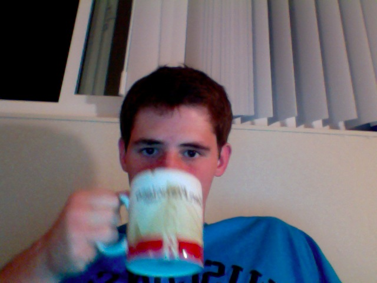

About me:I am a fourth-year undergraduate at the University of California at Berkeley studying Electrical Engineering/Computer Sciences and Applied Mathematics. My research interests include:
I have begun to migrate my code over to github. You can find a few of my projects here. 
|
 |